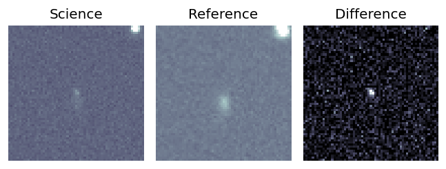
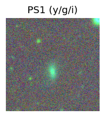
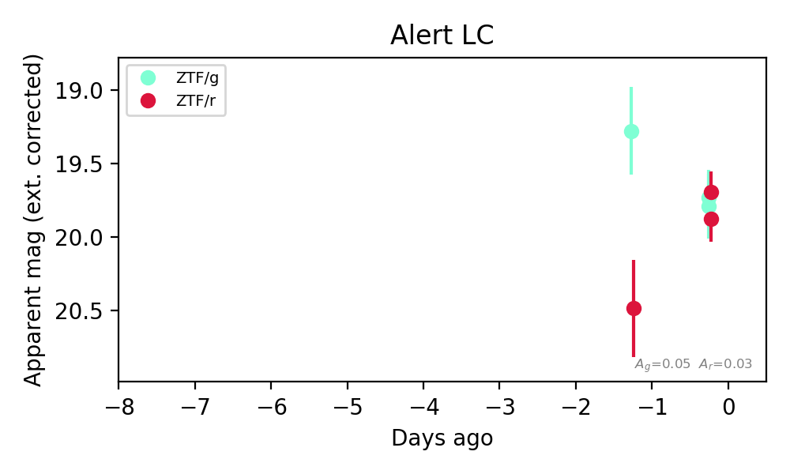

Candidate List 20261103Last night — ZTF: 4,723 passed basic cuts (91 young) · LSST: 0 passed basic cuts (0 young)Previous Day Next Day
Section 1: New Sources (age<1d) Section 2: Old (1-5d) sources observed last nightplaceholder
Section 1: New Afterglow/FBOT Cands Last Night (0)
Section 2: Older Sources Observed Last Night (2)
0. [ZTF] ZTF26aceixmh (Afterglow?) [Back to Top] [Share] [Trigger Swift] [Fritz Alert] [Fritz Source] [Lasair]RA, Dec: 152.61928, 35.0706 10h10m28.63s, 35d 4m14.17sGalactic (l, b): 189.7419, 54.8876 ext(g-r) = 0.015

TESS: Sectors [21 48]
SDSS (<15 kpc):Found SDSS phot-z: z=0.08; peak abs mag = -18.55
PS1: 0 sources in 3 arcsec
LegacySurvey: 1 sources in 3 arcsec Closest: d = 4.85 arcsec, 176.4 deg (east of north) photoz=0.03 (68% bounds 0.02, 0.06), type=SER peak abs mag (ext. corrected) = -16.7 (68% bounds -15.9, -18.05)

Extinction-corrected gr color:
From alerts: -0.02 +/- 0.18 mag
Consistent with synchrotron, g-r>0!
Rise Rate:
g: 0.04 mag/day
r: 0.7 mag/day
Fade Rate:
1. [ZTF] ZTF26acekidc (Afterglow?) [Back to Top] [Share] [Trigger Swift] [Fritz Alert] [Fritz Source] [Lasair]RA, Dec: 124.82568, -1.31403 8h19m18.16s, -1d-18m-50.50sGalactic (l, b): 224.56814, 18.80597 ext(g-r) = 0.076


TESS: Sectors [ 7 34 61 88 112]
SDSS (<15 kpc):Found SDSS phot-z: z=0.38; peak abs mag = -23.11
PS1: 0 sources in 3 arcsec
LegacySurvey: 1 sources in 3 arcsec Closest: d = 6.76 arcsec, 245.7 deg (east of north) photoz=0.44 (68% bounds 0.37, 0.52), type=REX peak abs mag (ext. corrected) = -23.5 (68% bounds -23.05, -23.93)

Extinction-corrected gr color:
From alerts: 1.16 +/- 99 mag
Rise Rate:
r: 45.4 mag/day
Fade Rate:
g: 0.53 mag/day